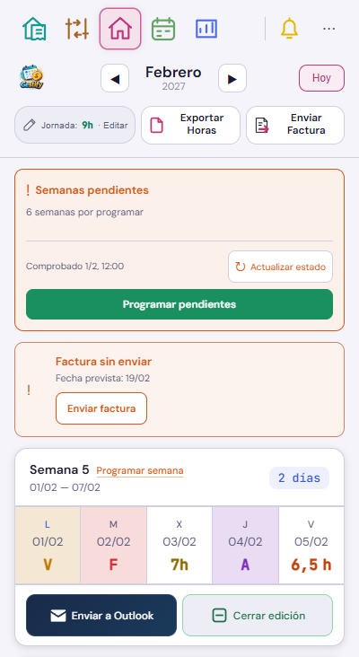
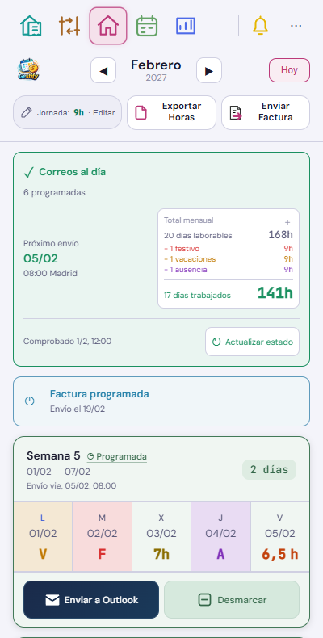
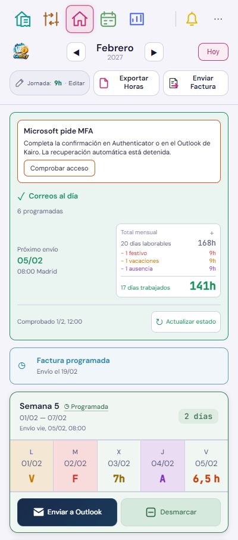
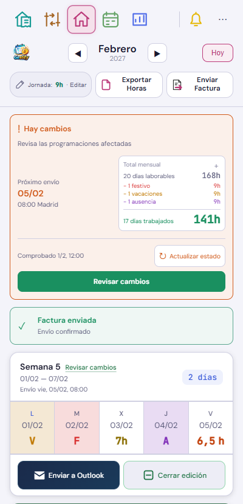
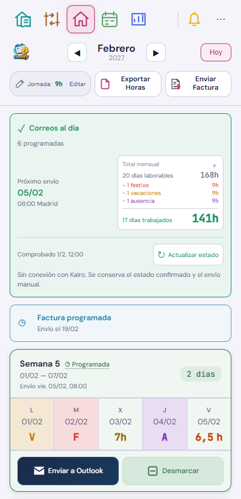
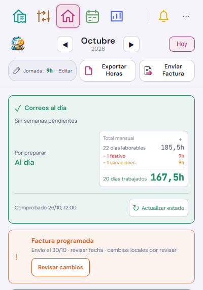

Semanas pendientes y factura sin enviar




El título de Factura sin enviar parpadea como Semanas pendientes; la imagen es fija. Se respeta la preferencia de movimiento reducido.
Interfaz real con datos ficticios. Se conserva el formato de las semanas y el envío manual. Se actualizan solo las tres referencias de Home del atlas; el resto conserva sus capturas y revisiones.


El título de Factura sin enviar parpadea como Semanas pendientes; la imagen es fija. Se respeta la preferencia de movimiento reducido.

El secreto se introduce en Kairo por SSH. Esta pantalla solo recibe la fase del recuperador. Comprobar acceso no aprueba MFA ni vuelve a intentar una contraseña rechazada.



La comparación usa los datos locales y la preparación guardada. No emite, modifica ni envía la factura.